"Passion and Progress - The Women Inspiring STEAM"

On Thursday, November 27, we were invited by AFIST to their anniversary event "Passion and Progress - Women Inspiring the STEAM Fields". We witnessed inspirational speeches from women working in science and technology, this topic is important to us and the rest of the girls who are part of FTC.
Robotika Fest

On the weekend of November 23-24 we had the chance to participate in the Robotika Fest event organized by Brave Bots as an exhibitor. We had the opportunity to share our passion for robotics and interact with other competing teams. We also had the opportunity to present our eco-friendly robot to people of all ages and the audience was interested in our work.
Bucharest Science Festival
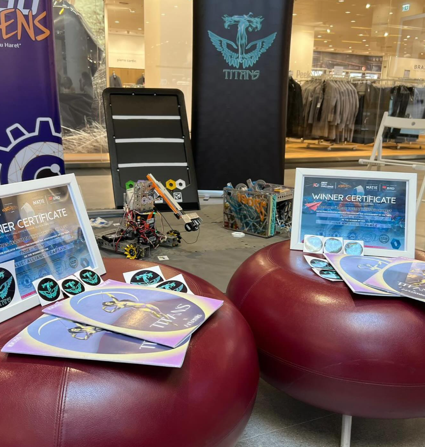On September 25, we were present at the Bucharest Science Festival, as exhibitors at the Science Salon for Schools activity. We had the opportunity to share with the public our passion for robotics and show our robot to the little ones.
World Cleanup Day
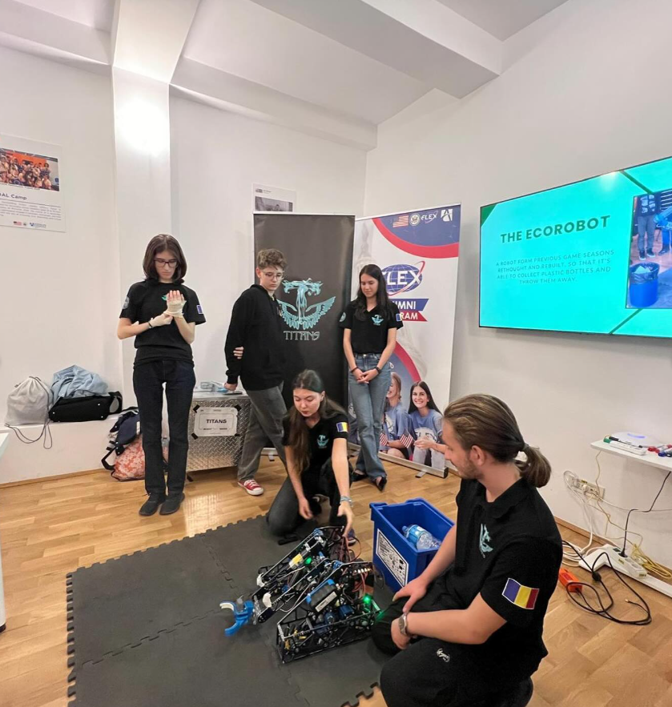On September 23, we had the opportunity to celebrate World Cleanup Day together with the graduates of the Flex education program. We presented our green project idea and demonstrated how the Eco-robot can collect plastic bottles. The event was an opportunity for experience sharing and networking, allowing us to gain a deeper understanding of the mission of Flex Alumni RO.
International Delegation of Teachers
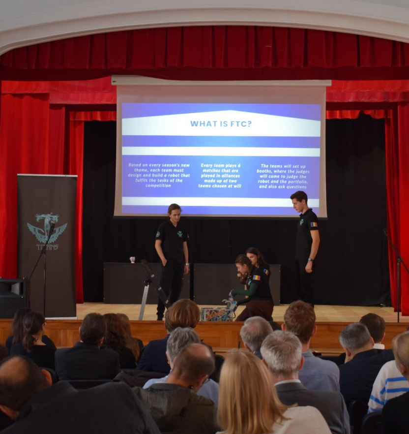During Green Week we had the opportunity to present our work to a delegation of teachers and education experts from around the world. We talked about the FTC competition, presented the robot and our non-technical activities. We were honored to share our experience and FIRST spirit with representatives from different countries.
Little Explorers
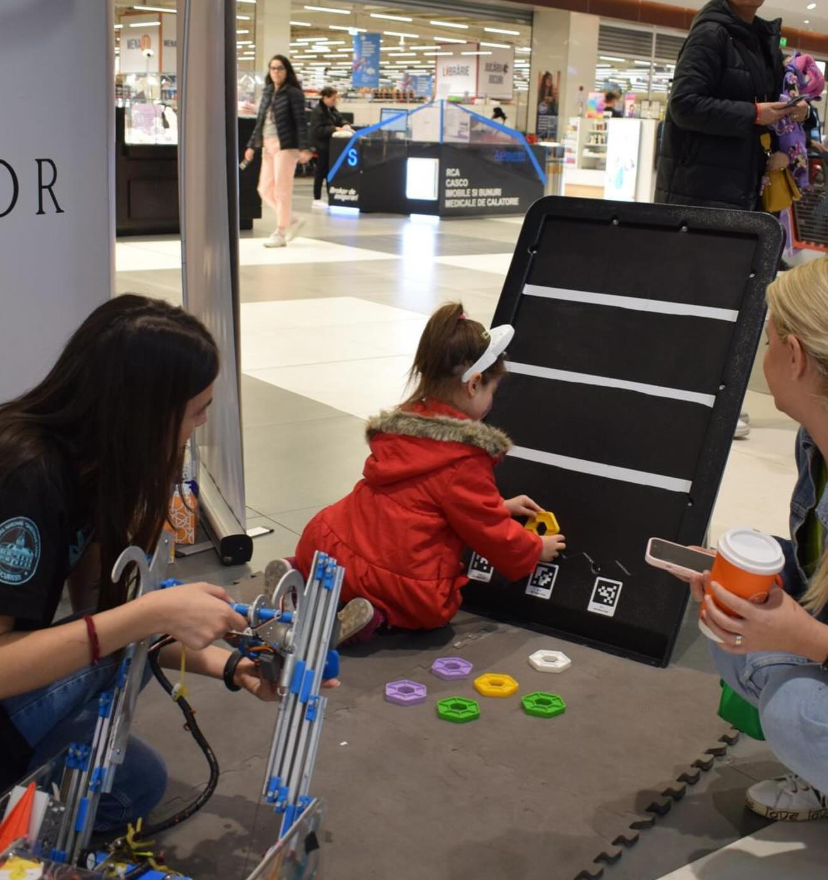On October 20, in Sun Plaza Mall, together with H-Tech , the robotics team of Ion Creangă National High School, we organized the event "Little Explorers". We also had as guests the organization ,,Save the Children" and Rospin. Together, we realized a lot of activities with the little ones and not only, such as: robotics workshops, games, origami and many others.
Bucharest Motor Showroom
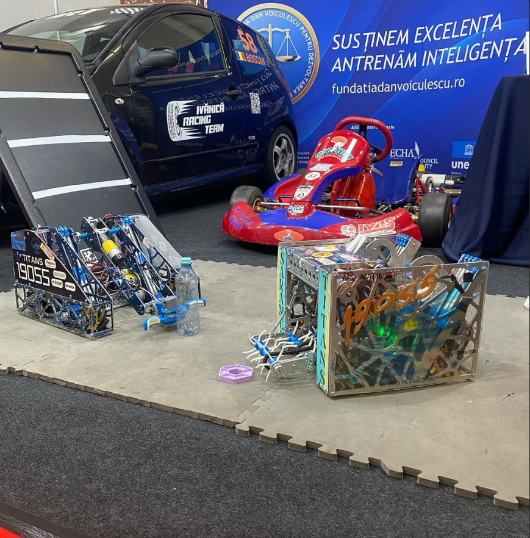On October 1st and 5th we participated as exhibitors at the Bucharest Motor Show. We had the opportunity to interact with people of all ages, showing them both our green robot and last season's robot. The public was very receptive, turning the exhibition into an excellent networking opportunity.
Rospin Fast Expo
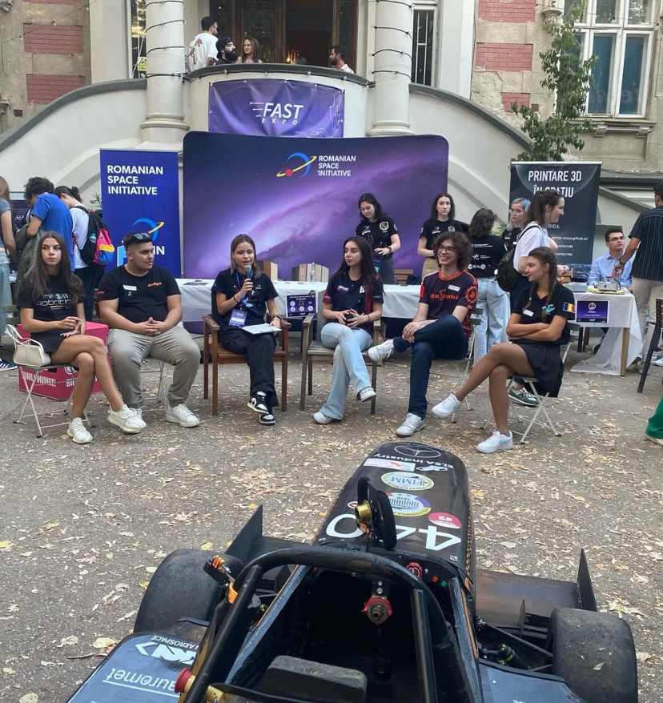On September 28th we participated in the FAST Expo event, organized by ROSPIN. We had the opportunity to share with the audience our passion for robotics, collaborate with other teams and interact with STEM experts.
Titans Bootcamp
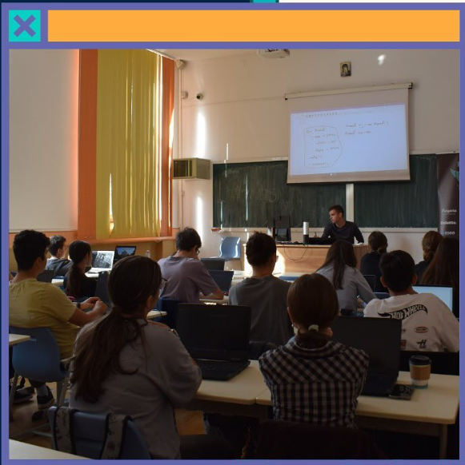On September 21st and 22nd we organized a Bootcamp for our team recruits at the National High School "Gheorghe Lazăr". We organized courses on marketing, hardware and software to show the students what robotics actually means. They were very enthusiastic and quickly learned the new concepts.
Student Arena
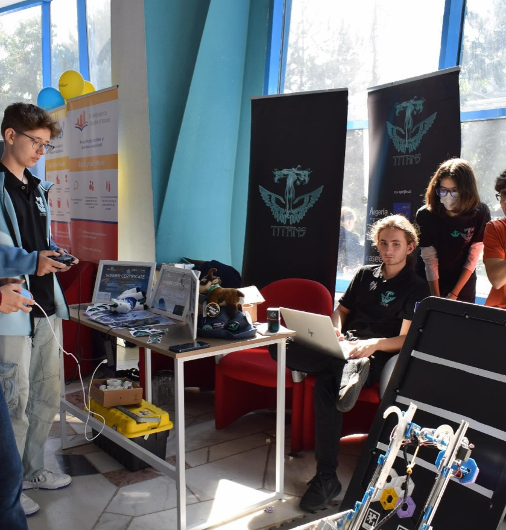On September 14 and 15 we participated as exhibitors at the vocational event Student Arena. We had the opportunity to share our passion with the public - robotics - but also to interact with specialists from various fields.
Quantum Kickathon 2024
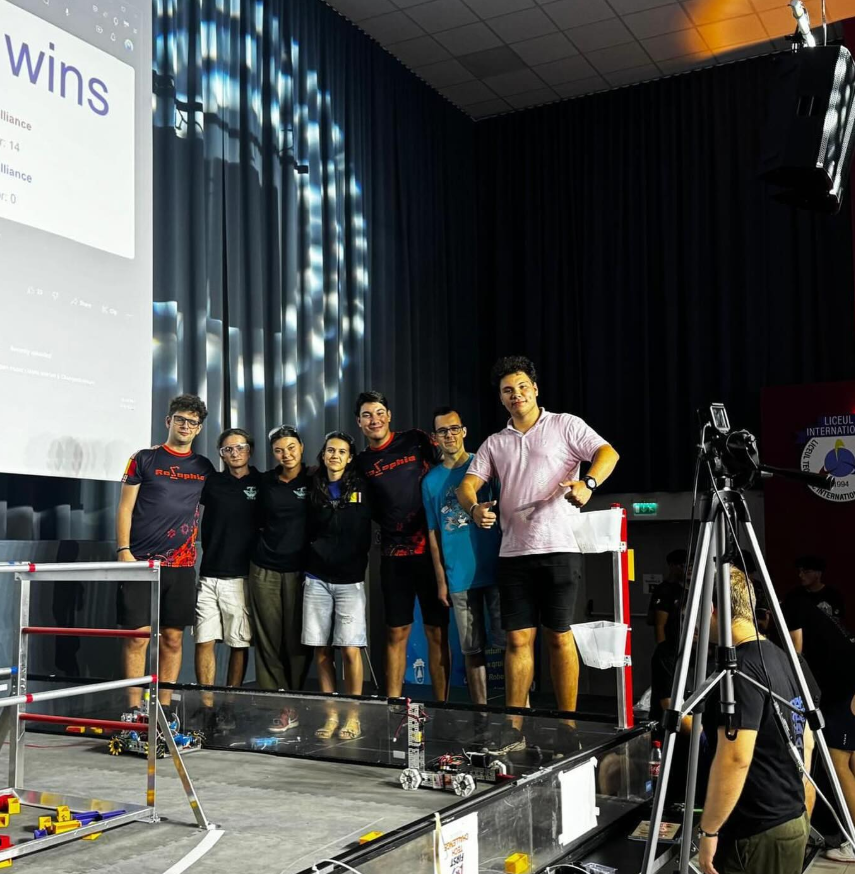The new season, Into the Deep, brought a wave of excitement and ideas that we were able to put into practice during the fourth edition of the Kickathon organized by the Quantum Robotics team. After learning the theme of the season, we built a prototype robot in just 16 hours and tested it on the new terrain. It was an interesting experience that challenged us to test our limits and helped us to improve our teamwork organization.
From Robotics to Archeology Summer School
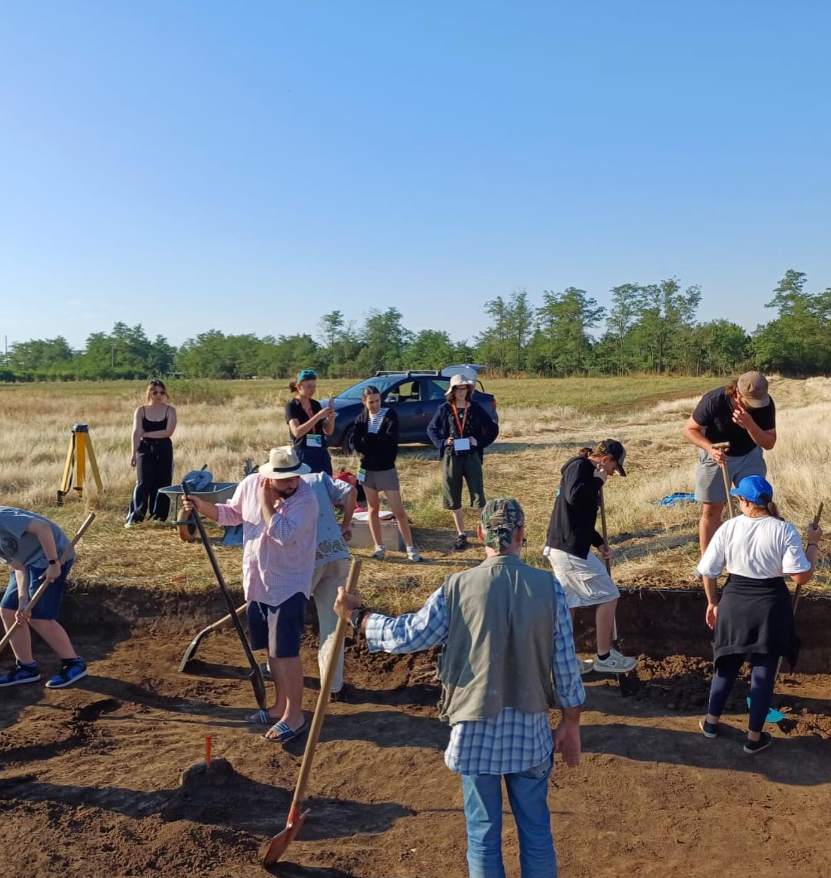In the summer of 2024 we took part in a new project: "From Robotics to Archaeology: Experimental, Innovative and Exploratory Summer School", started by the Research Institute of the University of Bucharest and Endava. We interacted with scientists, took part in research on the archaeological sites of Sultana and presented our work, with the aim of innovation and integration of robotics in the field of archaeology. We thank them for this unique experience and hope to collaborate in the future.
Esentza Summer Camp 2024
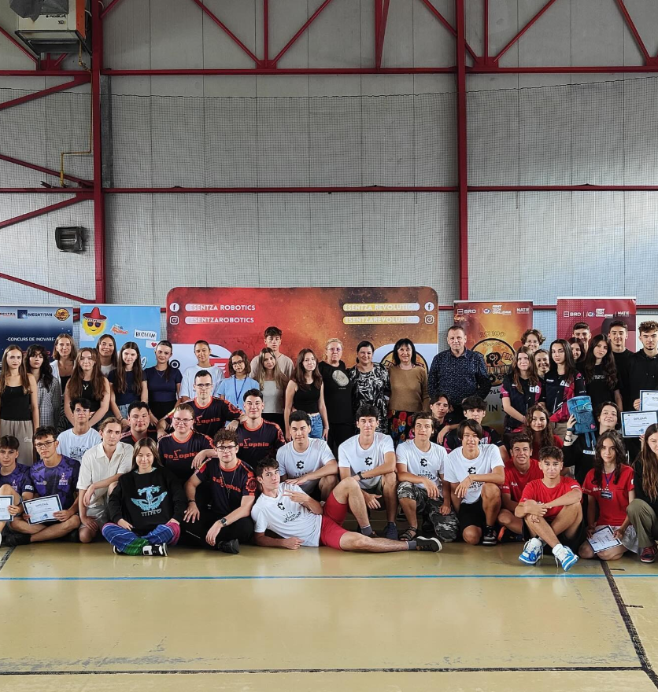From July 29 to August 4 we attended the robotics camp in Beclean. We had many beautiful experiences, made new friends and gained new information from the courses prepared by the organizers. We are excited to come back for more unique moments.
Somes Tech Challenge 2024

Someș Tech Challenge: another unforgettable experience! Although it marks the end of the season, this competition was a start for the new TITANS generation, who had the opportunity to experience the thrills of a game behind the console. Along with HighFive and 4D, we were among the semi-finalists.
Open Gates Day 2024
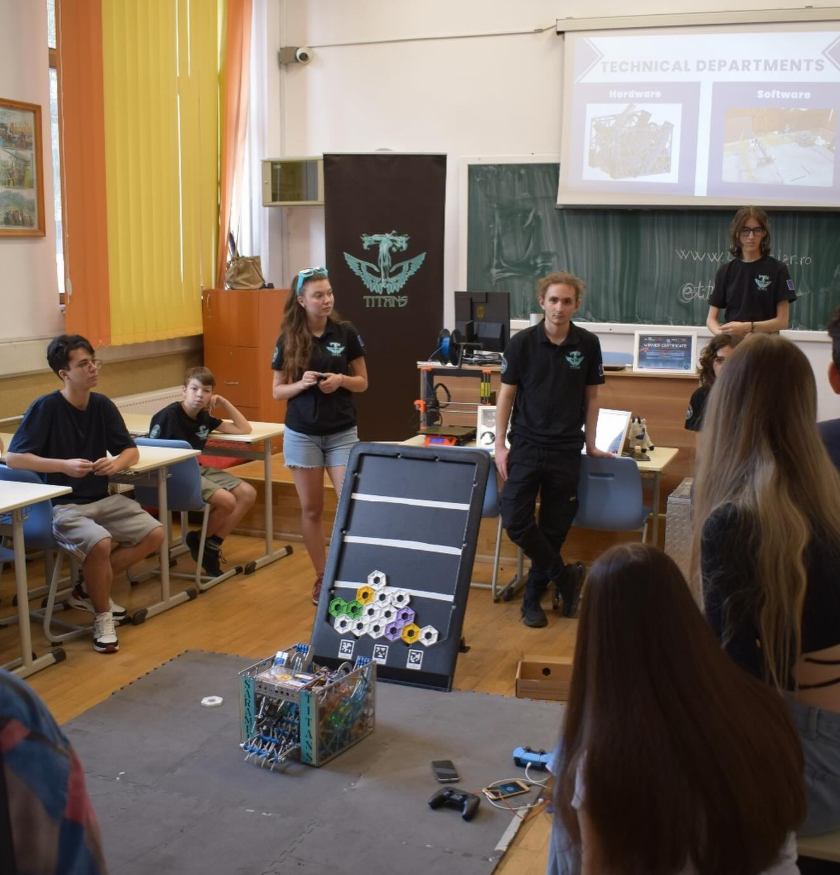On June 15th the Open Doors Day took place in our high school, "Gheorghe Lazăr" National High School in Bucharest. We presented both the activity of our team and the FTC competition to the curious 8th graders. The presentations covered all our activity in a season: from the recruitment process, robot design and building, programming, PR and marketing. We were happy to answer students' questions and hope we convinced as many future high schoolers as possible to join us!
Lazar Excellence Gala
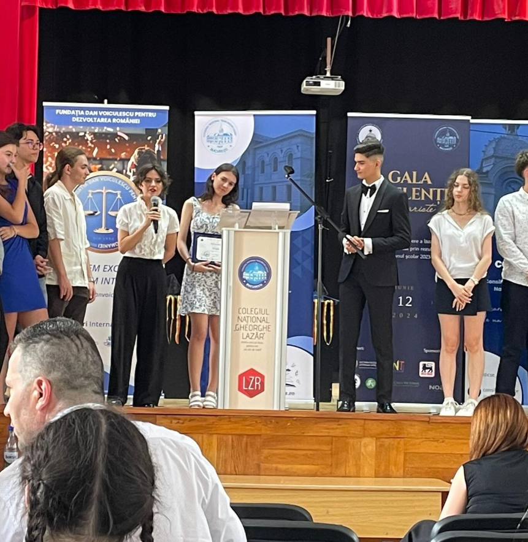On June 12 2024, the first edition of the Lazar Excellence Gala, organized by the Lazar School Student Council, took place, in which excellence in all areas, both clubs and students, was awarded. Our team was nominated in three categories: Communication and Marketing, Community and Interpersonal Relations, and Promoting Interest in Science and Innovation, in which we also won the grand prize. We are grateful for the support and understanding that our high school gives us and want to thank the Dan Voiculescu Foundation for presenting the awards!
Dev Talks
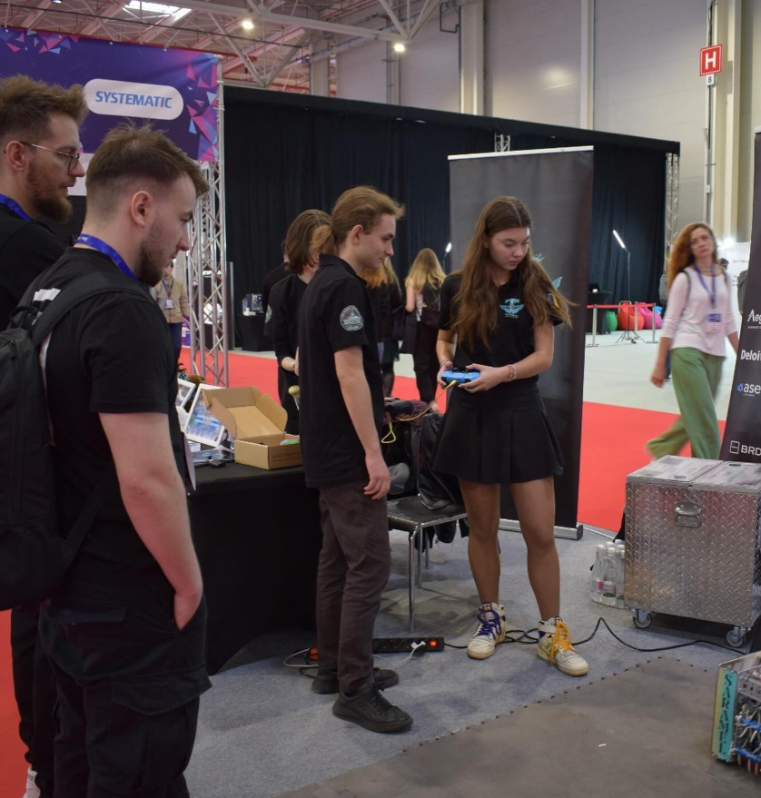On May 29th and 30th we had the chance to participate as an exhibitor at Dev Talks, the largest technology convention and IT exhibition in Romania. We enjoyed collaborating with other teams, promoting our work and sharing FIRST values.
Rospin Treasure Hunt
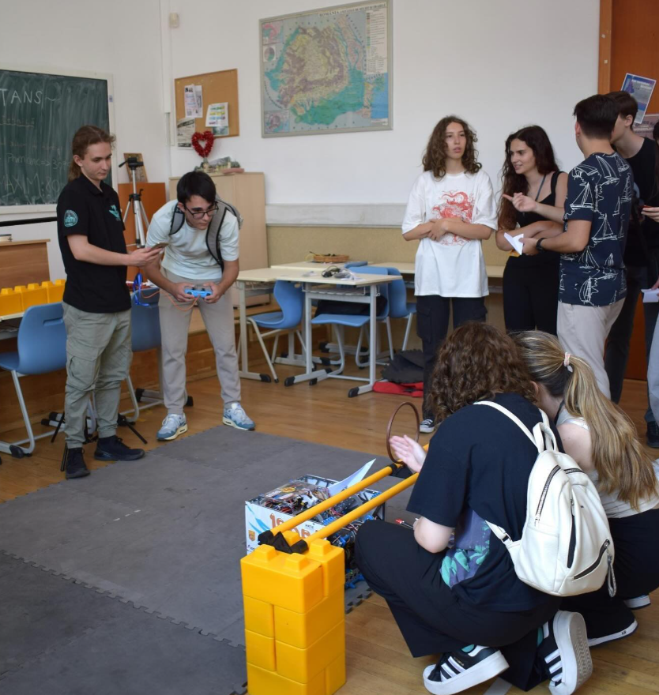X marks the spot... On May 25th we organized, together with Rospin , the Rospin Express treasure hunt. Explorers traveled to several locations and solved different riddles. They also stopped by our high school, where a series of TITANS technical and non-technical challenges awaited them. It was a unique experience that we enjoyed being part of!
Cisco Romania
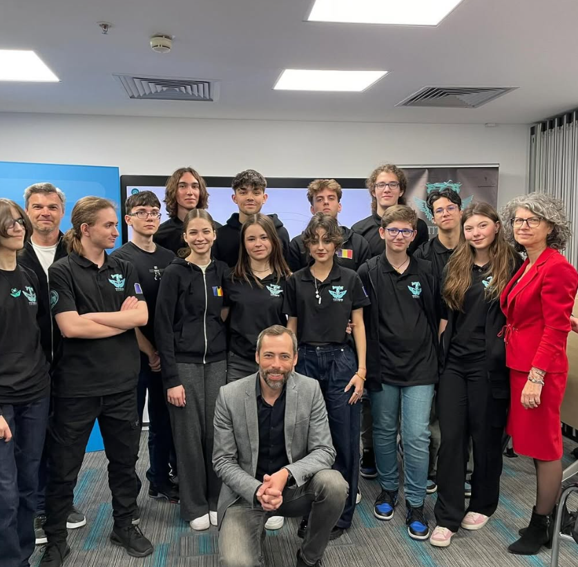In the Alternative School Week we were invited to visit Cisco Romania on April 22 where we had the opportunity to learn more about what they do and we presented our team and FIRST values. It was both a learning and networking opportunity for which we are grateful and hope to maintain this connection for the near future.
Clef Magazine
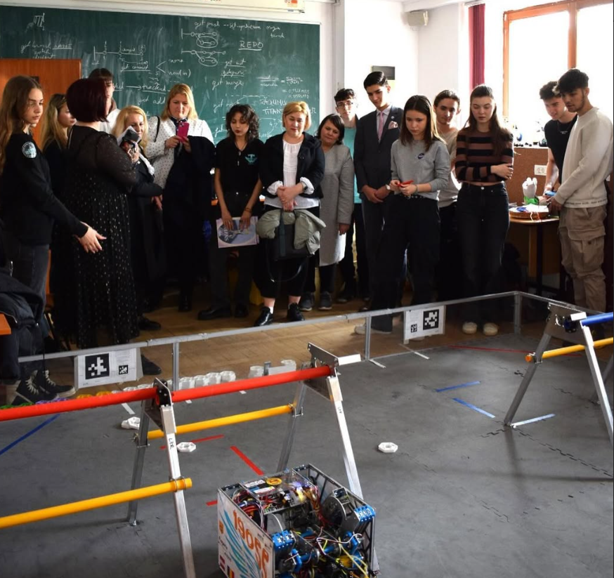Continuing the activity of our high school's Alternative School Week, on April 24, we had the opportunity to present the work of our team in the CenterStage season to the teachers of the "Ion Creangă" Theoretical High School in Chisinau, Republic of Moldova. Our team was also dedicated an extensive article in the CLEF magazine - a project realized between the two high schools. We described the FTC competition, the STEAM values underpinning it and the experiences gained in previous seasons thus gaining more outreach.
Skills For The Future
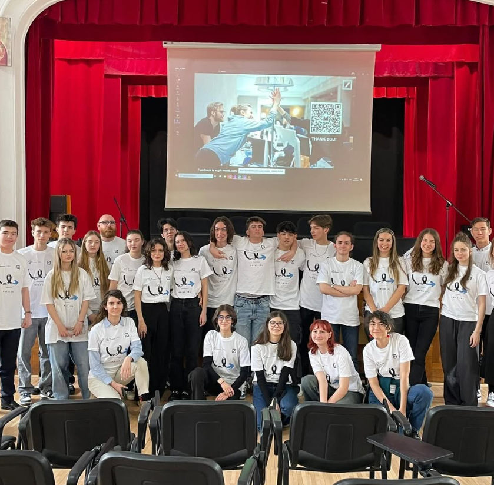This season, we took every opportunity to learn new things and improve our teamwork. That's why we participated in workshops organized by Junior Achievement and Deutsche Bank , to understand new things through practical activities. The activity took place in several high schools in Bucharest and aims to develop life skills. It was a fabulous opportunity to get organized when working under pressure and to realize that teamwork is crucial, that's why we apply the principles of Agile concept in our daily work.
Titans Academy - The Sequel
On March 2nd we organized another edition of the Titans Academy event, supported by Systematic and eye/o. We had as guests the Masterminds and Robotitans teams, along with recruits and volunteers. We learned together some Java design and programming principles at the first workshop held by Răzvan Negrea and Roxana Manea, Systematic representatives. At the second workshop, held by Ștefan Teleu, project manager at Systematic, we learned how to communicate effectively with the team we are part of in order to achieve our goals. In the last workshop, held by Victor Mihaiu, eye/o representative, we learned how to proceed in order to valorize both ourselves, the team, and the product of our work, the robot. During this event, we had the opportunity to develop new skills and improve the ones we already had.
Beyond The Borders
This season we had the opportunity to expand our connections with other teams beyond Romania. We managed to connect with three teams from North America, two from the USA and one from Mexico, with whom we held webinars. These were very interesting experiences, where we were able to meet new people, receive and give advice. We also learned more about FTC and FRC competitions.
Sfatul Popular on TVR3 Live
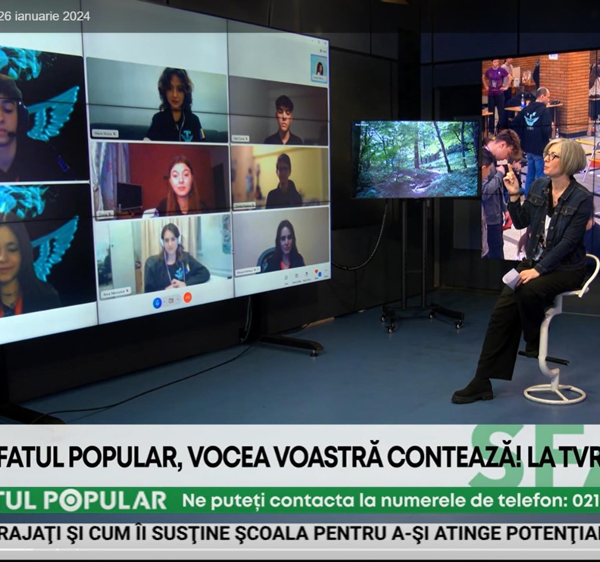On January 26 2024, the very first day of the regional in Bucharest, we had the opportunity to participate at the Sfatul Popular show on TVR3.
"On Stage" Meet
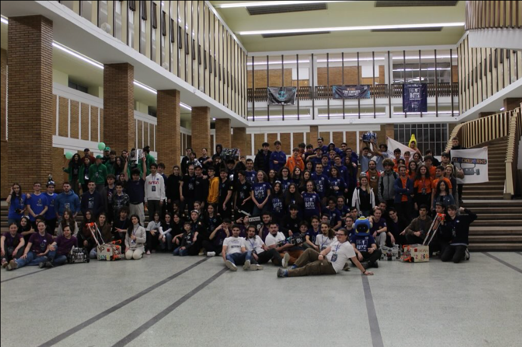The "On Stage" Meet on January 13, organized by BraveBots and Titans, was a captivating and memorable experience, filled with passion and creativity. Both teams contributed to the exciting atmosphere of the event, showcasing well-organized efforts and achieving remarkable results. We thank all participants for their active involvement and contribution to the success of this special day in the FIRST world!
Rocket Science
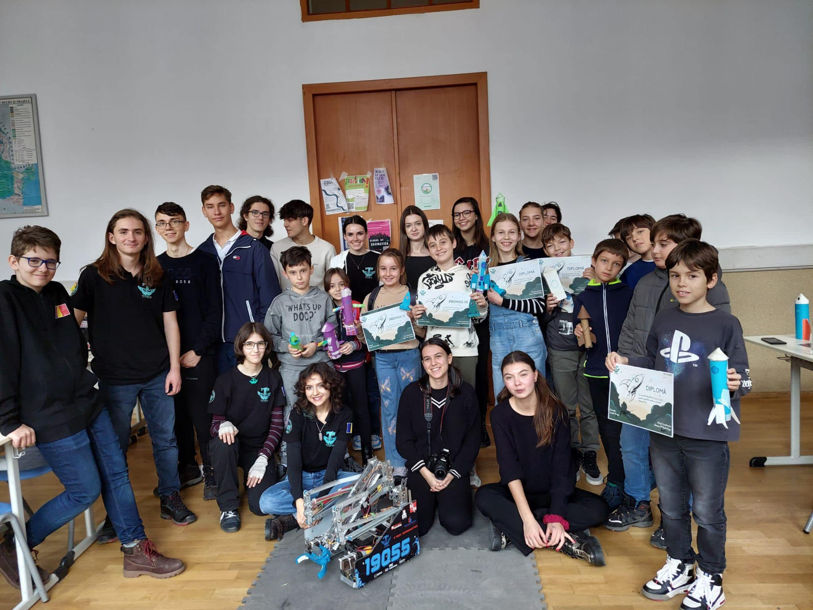We had the opportunity to travel into outer space with primary school students. We had Norbert Kelemen, a student at the Faculty of Aerospace Engineering, with us to talk to the children about the rockets being sent into space. They were then able to put the new information they had learned into practice by unleashing their imaginations and building their own space rockets from recyclable materials. The "St. Dimitrie" Foundation will benefit from the financial resources gained from our work.
Titans Academy
This October we organized the first edition of the Titans Academy event, supported by AMC Studio and Adobe. We had 8 teams as guests, along with our recruits and volunteers. Together we learned how to give speeches at the first "Presentation Skills" workshop, given by Ștefan Bădescu, Adobe representative. At the AMC Studio workshop, held by Alexandru Eremia, we learned how to create our own 3D characters in "Blender". During this event, we had the opportunity to develop new skills and improve the ones we already had.
European Researchers' Night 2023
This year we participated again in the European Researchers' Night where, as exhibitors, we provided the public with robots built from Lego sets and the workshop for Arduino beginners. The little ones were also attracted by our Power Play season robot which they could observe on the ground. Parents and children of all ages were interested in our robots and we hope we inspired them to learn more about robotics, a field of the future.
Quantum Kickathon 2023
At the start of this season, we participated in the 3rd edition of the Kickathon organized by the Quantum Robotics team. After learning the game of the Center Stage season, we built a prototype robot in just 16 hours and tested it on the new field. It was an exciting experience that challenged us to test our limits and helped us improve our teamwork.
Bucharest Twin Cup
Mid-August we participated in the Bucharest Twin Cup competition, where, together with Tea-Borgs, we formed the alliance called TEA-TITANS. It was an intense couple of days, where we played hard matches, had fun and enjoyed the whole BTC experience.
Beclean Summer Camp 2023
Somes Tech Challenge Dej-Cluj
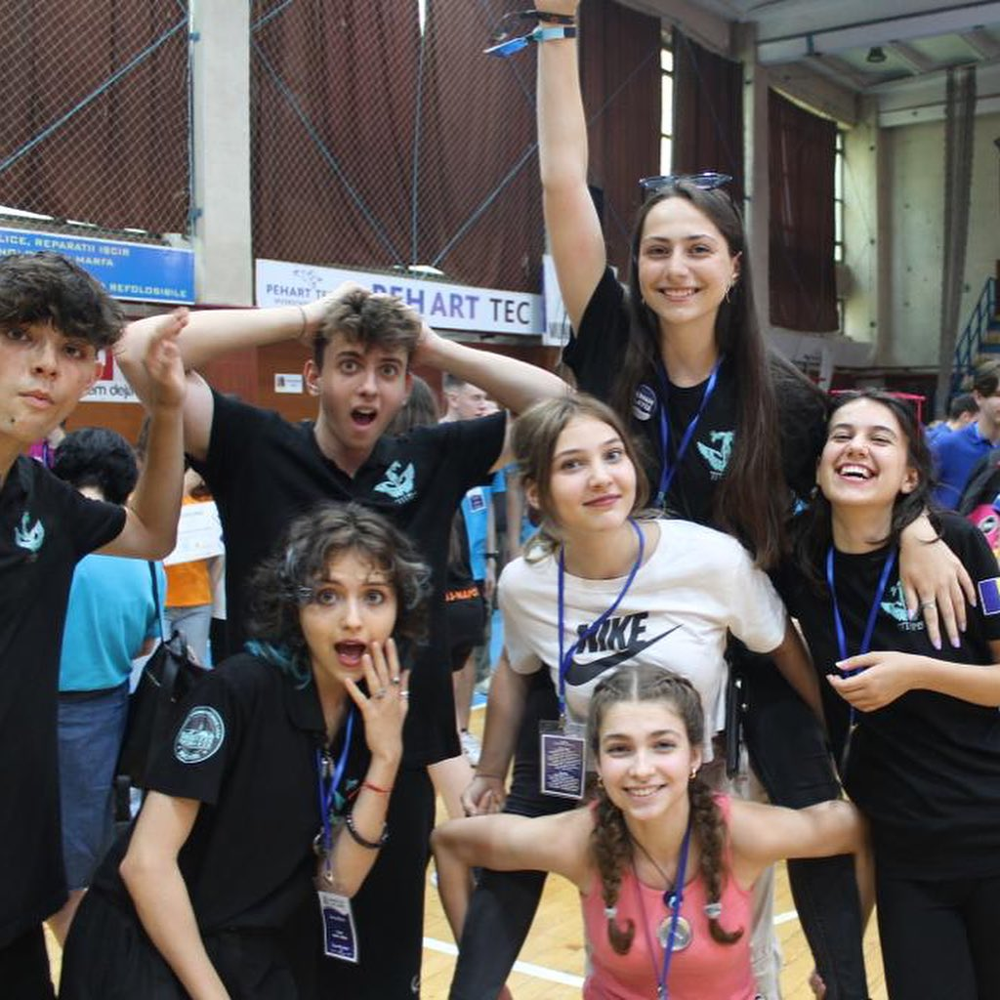This demo gave us the opportunity to look back at the challenges and successes of the previous year, but also to gain new experiences, always useful, especially for the training of the new TITANS generation. The training and the attention put into the transformation of our robot have made themselves visible, facilitating our place among the STC finalists. We thank them for the unforgettable moments not only for them, but also for the organizing team, for the opportunity that has been presented to us, allowing us to continue to aspire towards performance.
KidsFest - University POLITEHNICA of Bucharest
At the end of June we took part in the KidsFest event that took place at the Politehnica University of Bucharest. Together with 7 other teams invited by us, we presented our robots to children while we held 3D design and printing workshops and demonstration matches to show how the First Tech Challenge competition takes place. We enjoyed a great atmosphere with the little ones, and although the weather wasn't the sunniest, we didn't stop having fun together.
Robotics Seminar
We participated in a seminar on the importance of robotics for children and teenagers and presented how a Power Play match is conducted. This allowed parents to see how robotics can be put into practice as a relaxing activity through the First Tech Challenge competition.
"Gheorghe Lazar" National College - Open Day
In June 2023, we participated in the Open Day of the "Gheorghe Lazăr" National College. We presented the work of our team in front of hundreds of future high school students, whom we are looking forward to welcome in our high school and even in our team. Together we will build the future generation of schoolchildren!
WE CREATE THE FUTURE - Promenada Mall Bucharest
In May 2023, we organized the WE CREATE THE FUTURE event in partnership with Orion Robotix and Promenada Mall Bucharest. Together with teams from around the country we organized friendly matches, held workshops about robotics and presented the First Tech Challenge competition and our journey to the people passing by.
Faculty of Industrial Engineering and Robotics' Workshops
Both team members, recruits and volunteers have learned or improved skills in sensor operation, 3D printing and design by participating in the workshops, adding value to the team.
Cyber Security - Deloitte
Andrei Ifrim and Andrei Ionescu, cybersecurity specialists at Deloitte, shared with us information about their field of work, stating the educational background we should have, while offering us the possibility of internships within the company.
ERASMUS „ALTERITE, RESILIENCE, IMPLICATION et INCLUSION”
The countries and educational institutions involved in the ERASMUS 2023 - 2024 project are: France (Lycée Issec Pigier), Spain (Lloixa and El Somni), Italy (Liceu P. Savi), Slovenia (Liceul Srecka) and Romania (Colegiul Național "Gheorghe Lazăr"'). As part of the project, we had the opportunity to teach 20 of the participating students how to operate an FTC robot and how it can improve the life of a disabled individual.
Starting a STEM businessInfomedia Pro
We learned from V. Giurgiulescu, CEO of Infomedia Pro, what the basics of an IT start-up are. He shared his own experience as an example and stressed the need for entrepreneurship.
EcoRobot - Marathon EPR Group S.A.
In order to promote FIRST values and environmental education among young generations, we support presentations in numerous schools in Bucharest (School No. 79, ARC Metropolitan School, School No. 49, School No. 108, "Gheorghe Lazăr" National College) and in nearby counties such as Giurgiu and Calarasi.
Radio Romania Actualități Morning News
Bianca, as a representative of our team, along with a mentor, was invited to participate in the Radio Romania Actualități morning show, where the topic of discussion was the national stage of the "BRD -First Tech Challenge" competition. Our team has been participating in this competition since the first season, so Bianca shared with the listeners the experiences she had with her colleagues.
LZR ROBOTICS FEST 5TH - University POLITEHNICA of Bucharest, ECDL Romania
The demo we organized gave us the opportunity to train and communicate with 20 national teams, the winners of the competitive matches were awarded by the Dean of the Faculty of Industrial Engineering and Robotics himself. At the same time, in partnership with ECDL Romania, we organized a 3D design and printing competition, which was judged and awarded by Raluca Constantinescu, ECDL Programme Development Manager, and Mihai Peca, ECDL Trainer.
RoboSpace - Romanian Space Innitiative, SpacedIn, Marathon EPR
The RoboSpace charity activity was inspired by the ROSPIN For Schools project, which is why the 30 participating students from Bucharest learned about robotics, the FTC competition, and space. They also used their technical and even creative skills by building models of lunar rovers. The material (school supplies, books) and financial resources raised were donated to the "Sfântul Dimitrie" Foundation.
KIDIBOT Contest - "Ion Heliade Rădulescu" Secondary School
We had the opportunity to talk about the team and the FTC contest with Mr. Sebastian Burduja, Minister of Research, Innovation and Digitalization and Mr. Daniel Cingu from the Local Council Sector 1. The competition consists of several IT challenges, one of them being the throwing of plastic bottles in the trashcan with the help of our robot.
European Researchers' Night 2022
As exhibitors, we organized programming and robotics workshops for children to replicate the team's work in the context of the competition, teaching them how to operate a robot, be it the ARDUINO, the eco robot, or the Freight Frenzy robot. In this way, we promoted FIRST values among them and also had the opportunity to communicate with other participating robotics teams, sharing ideas.
Mentoring - Team OrionRobotix (European School Bucharest)
This season we became mentors to the OrionRobotix rookie team, introducing them to FTC competition and mentoring them throughout the season, as well as inviting them to join us at various events to enhance their development. We will also collaborate in the future by organising a presentation for primary and secondary school children.
Quantum Kick-Off 2022
This year's KICK-OFF Competition, organised by Quantum Robotics Team, set the scene for an 18-hour robot concept, based on the newest FTC season, Power Play. Not only did we build and program our robot from scratch, but we also seized the opportunity to bond with other attending teams and showcase our progress thus far.
Beclean Summer Camp 2022
What an experience it was! With utmost glee we took part in the camp organised by Esentza Robotics Team in their hometown Beclean. Activities ranging from spontaneous robot building, treasure hunts, on-field matches and a variety of lectures, surely kept us busy, yet entertained.
Dej-Cluj Demo Competition
This time, we travelled all the way to Dej-Cluj, in order to participate in a demo competition organised by our fellow Robotics Team Vectron. We gave our all, enjoying the jolly atmosphere and the on-field matches, in the end, even managing to earn our place on the podium.
CodeCamp
A truly interesting event concept, where teams had to scout the presentation area in order to discover various participating companies and gain their favour, so as to obtain a future sponsorship deal.
AIDEES Erasmus+
We had a wonderful experience with our friends from France, Spain, Italy and Slovenia in the AIDEES Erasmus+ project! Our guests benefited from our hands-on approach, as they were able to get a taste of the robots’ functionalities right then and there, without any previous experience!
The First EcoRobot Event
Gymnasium School No. 194 was the first educational unit where the series of workshops for children began and the school representatives are delighted with the project:
"The development of an educational program through which children acquire knowledge and motivation to act individually and in a team to solve problems related to environmental protection, aided by robotics, is an essential component of current education."
EcoRobot Project
Marathon EPR & Titans present an ecological project that is meant to bring a cleaner environment to our world. We have decided to rebuild the Skystone robot for recycling usages and so far it has been a great opportunity to showcase our care for the beloved Earth! Let's simplify the recycling tasks so that we can live in a cleaner place!
European Researchers' Night 2021
Our team showcased this year's robot at the Researchers' Night Bucharest, where they also held arduino and programming workshops for children. We are very grateful for seeing the next generation taking initiative and being so interested in STEM activities!
National Hybrid Championship
Dear Titans-readers, your support and good thoughts, along with our never-ending strive for success brought our team's accomplishments at the FTC National Championship. Titans has been listed as the Inspire Award 3rd Prize Winner, an award that is considered the most precious result a team could receive in the FIRST ecosystem. It is given to the team that has an accurate and complex robot that surpasses the basic tasks on the field. The Inspire Award winning team shares the FIRST values in its community and frequently proves initiative and determination. It has been a great pleasure reuniting with the other teams. We were on cloud nine while reviving the physical national stage atmosphere. We hope we will get together soon.
Quantum Robotics Demo
We were invited by Quantum Robotics to participate in their traditional qualifiers. It was the first traditional event of the season and it was a superb experience. We were finally able to show other teams how far we’ve come, to scope up the competition, and to further refine our autonomous and driving skills. We also had a great performance, winning second place.
Quantum Robotics also invited us and all the other teams that qualified to the national championship after the Bucharest Regional Qualifier to a practice session at their high school. It was a great way to identify other good teams for potential alliances at the national championship and to make final adjustments to the autonomous code. Three days before the national championship, Ignite Robotics also invited us to a practice session at their high school. We whole-heartedly agreed to participate, since we think that driver practice within the last few days is very important.
IOWA Invitational
After our good result at the regional qualifiers in Bucharest, we were invited to participate in the Iowa Invitational, which along with the Maryland Tech Invitational are the biggest off-season FTC events in the United States. It was a great experience to play among great teams from around the world and we greatly improved our skills. We won Design Award, making this the second award in the Ultimate Goal 2020-2021 season, after the Inspire Award obtained during the regional competition.